Slides available at:
slides.mobiusconsortium.org/blake/evergreen_hack_class
Created by Blake Graham-Henderson / blake@mobiusconsortium.org
Press ESC to browse slides
Slides continue downward
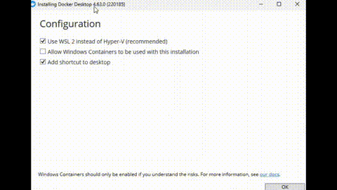
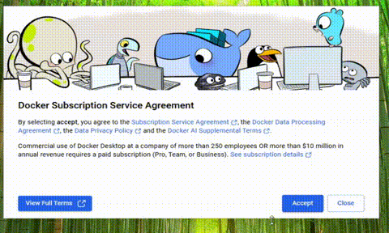
wsl
free -h
exit
notepad $home\.wslconfig
[WSL2]
memory=24GB
# save and exit
wsl --shutdown
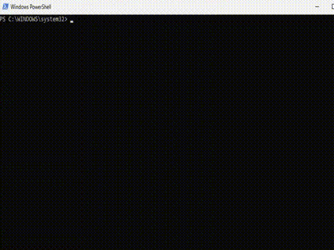
Checkout as-is, Commit as-is
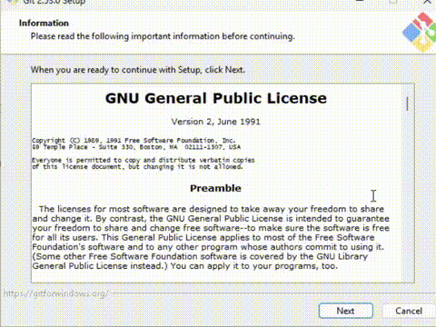
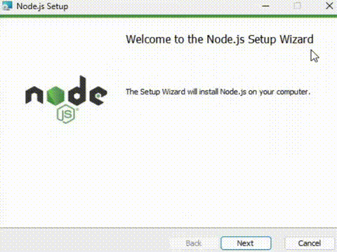
From git bash window
cd ~
git clone git://git.evergreen-ils.org/Evergreen.git
cd Evergreen
git remote add -f working git://git.evergreen-ils.org/working/Evergreen.git
git remote set-url --push working git@git.evergreen-ils.org:working/Evergreen.git
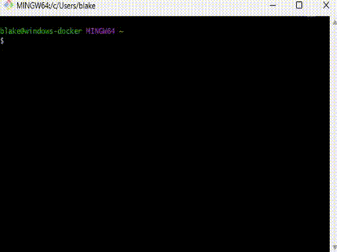
# From Admin powershell
Set-ExecutionPolicy Unrestricted
# From standard powershell
cd ~/Evergreen/Open-ILS/src/eg2
npm ci
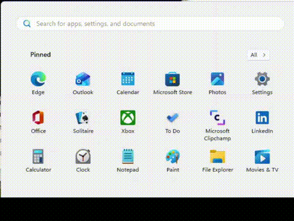
# From standard powershell
cd $home\Evergreen\Open-ILS\src\eg2
npm install -g @angular/cli
# test and make sure you can execute ng
npx ng build --configuration=production
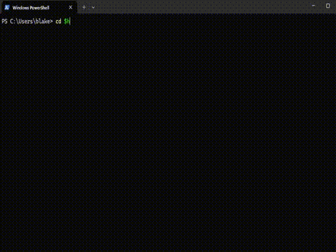
From powershell window
docker pull mobiusoffice/evergreen-ils:dev
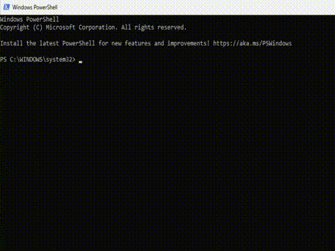
Optional
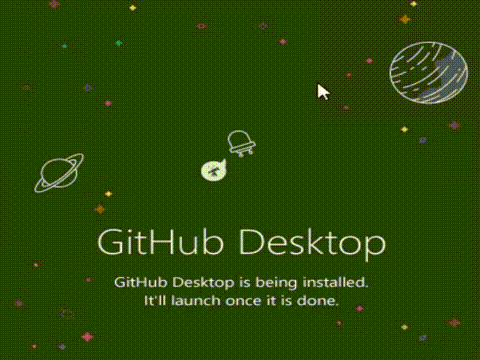
Slides continue downward
Install Docker
Instructions link
sudo apt update
sudo apt install ca-certificates curl gnupg
sudo install -m 0755 -d /etc/apt/keyrings
curl -fsSL https://download.docker.com/linux/ubuntu/gpg | sudo gpg --dearmor -o /etc/apt/keyrings/docker.gpg
sudo chmod a+r /etc/apt/keyrings/docker.gpg
echo \
"deb [arch=$(dpkg --print-architecture) signed-by=/etc/apt/keyrings/docker.gpg] https://download.docker.com/linux/ubuntu \
$(. /etc/os-release && echo "$VERSION_CODENAME") stable" | \
sudo tee /etc/apt/sources.list.d/docker.list > /dev/null
sudo apt update
apt-cache policy docker-ce
sudo apt install docker-ce docker-ce-cli containerd.io docker-buildx-plugin docker-compose-plugin
Install Docker Animation
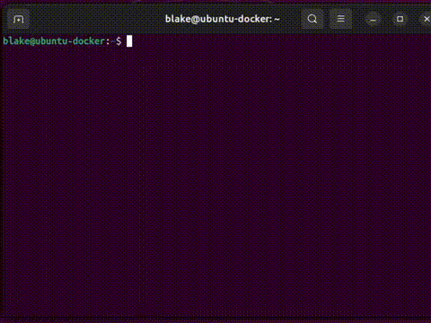
Install git
sudo apt install git
Install nodejs
sudo apt install nodejs npm
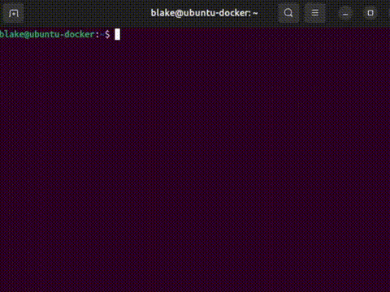
From git bash window
cd ~
git clone git://git.evergreen-ils.org/Evergreen.git
cd Evergreen
git remote add -f working git://git.evergreen-ils.org/working/Evergreen.git
git remote set-url --push working git@git.evergreen-ils.org:working/Evergreen.git
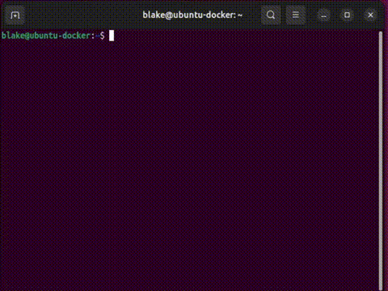
cd $HOME/Evergreen/Open-ILS/src/eg2
npm ci
# test and make sure you can execute ng
npx ng build --configuration=production
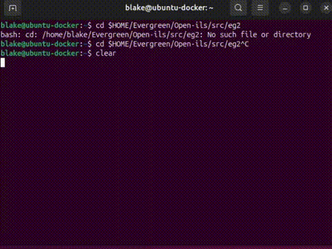
As root
(because we need to ultimately access port 80, 443)
sudo su -
docker pull mobiusoffice/evergreen-ils:dev
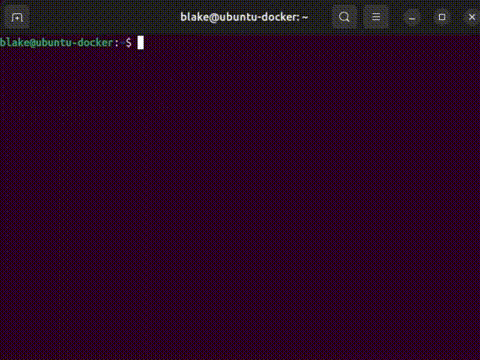
Slides continue downward
Install Homebrew
Instructions link
/bin/bash -c "$(curl -fsSL https://raw.githubusercontent.com/Homebrew/install/HEAD/install.sh)"
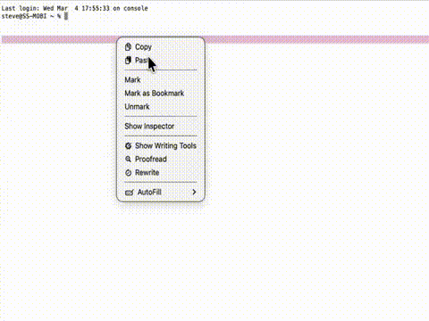
Install Docker
Instructions link
docker pull mobiusoffice/evergreen-ils:dev-arm64
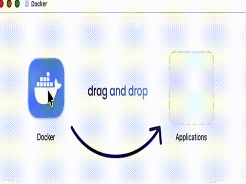
Install git and clone Evergreen
brew install git
cd ~
git clone git://git.evergreen-ils.org/Evergreen.git
cd Evergreen
git remote add -f working git://git.evergreen-ils.org/working/Evergreen.git
git remote set-url --push working git@git.evergreen-ils.org:working/Evergreen.git
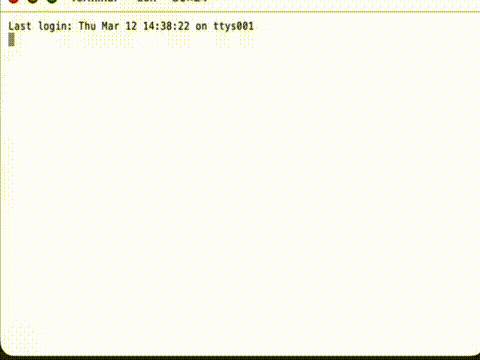
brew install nodejs npm
cd ~/Evergreen/Open-ILS/src/eg2
npm ci
# test and make sure you can execute ng
npx ng build --configuration=production
# standard powershell prompt
# * Fix "user" to match your username
docker run -it -p 80:80 -p 443:443 -p 210:210 -p 6001:6001 `
-p 5433:5432 `
-v //c/users/user/Evergreen:/home/opensrf/repos/Evergreen `
-h test.evergreen.com mobiusoffice/evergreen-ils:dev
sudo su -
docker run -it -p 80:80 -p 443:443 -p 210:210 -p 6001:6001 \
-p 5433:5432 \
-v ~/Evergreen:/home/opensrf/repos/Evergreen \
-h test.evergreen.com mobiusoffice/evergreen-ils:dev
docker run -it -p 80:80 -p 443:443 -p 210:210 -p 6001:6001 \
-p 5433:5432 \
-v ~/Evergreen:/home/opensrf/repos/Evergreen \
-h test.evergreen.com mobiusoffice/evergreen-ils:dev-arm64
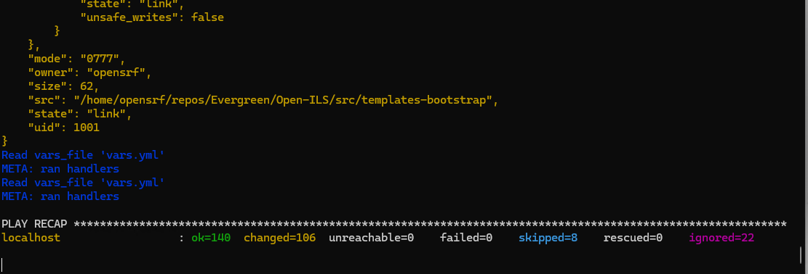
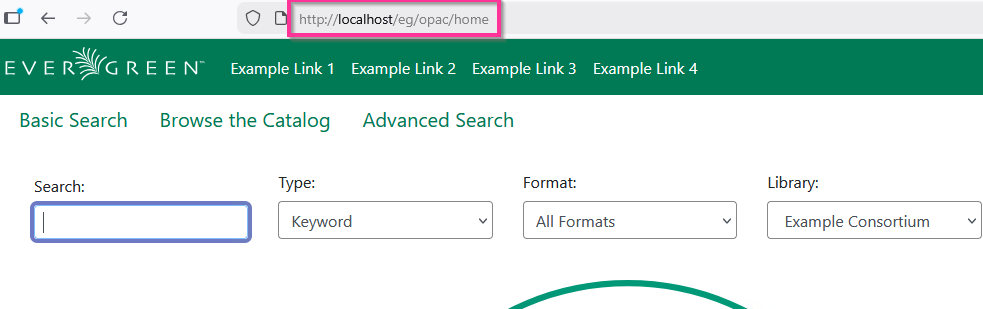
Accept the fake certificate
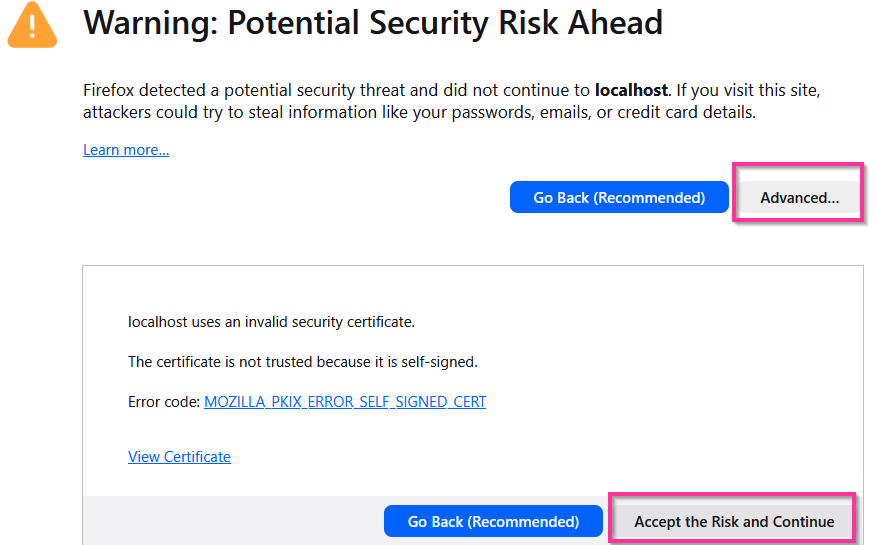
The Angular components are still building
The container forego's that process to get the container online quicker
(slides continue downwards)
Three columns, space delimited
evergreen standard *
evergreen_enhanced enhanced
Angular build output
Restart Evergreen Stack
Change the OPAC
Slides continue downward
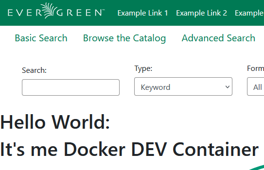
https://bugs.launchpad.net/evergreen/+bug/2146852
Slides continue downward
git checkout -b lp2146852 working/collab/blake/lp2146852_multi_staff_user_carousel_breakage
git log --name-only
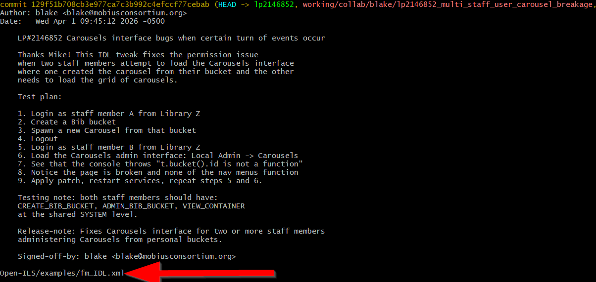
In this case, we need restart Evergreen Services only
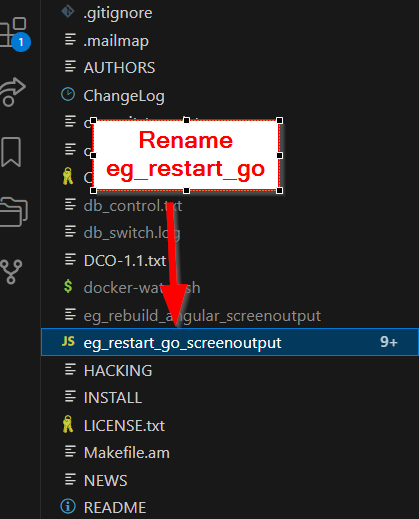
https://bugs.launchpad.net/evergreen/+bug/2119574
Slides continue downward
git checkout -b lp2119574 working/collab/dyrcona/lp2119574-angular21-rebase
git log --name-only
# Oh - it's more than one commit, let's squash to see the picture
git rebase -i HEAD~9
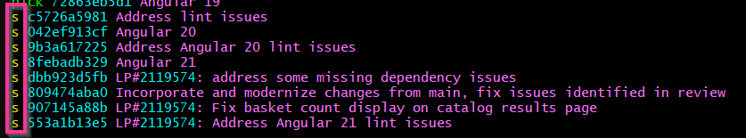
git log --name-only
A lot of files, but they are all
Open-ILS/src/eg2
In this case, we need rebuild Angular
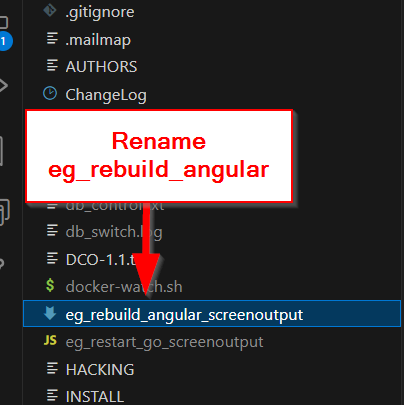
https://bugs.launchpad.net/evergreen/+bug/1968186
Slides continue downward
git checkout -b lp1968186 user/miker/lp-1968186-lasso-policies-and-cloning
git log --name-only
This one has database changes, so we need to either:
db_control.txt
evergreen standard
evergreen_enhanced enhanced
evergreen_lp1968186 standard *
Save the file and watch the magic happen
This file will help "see" what's going on inside
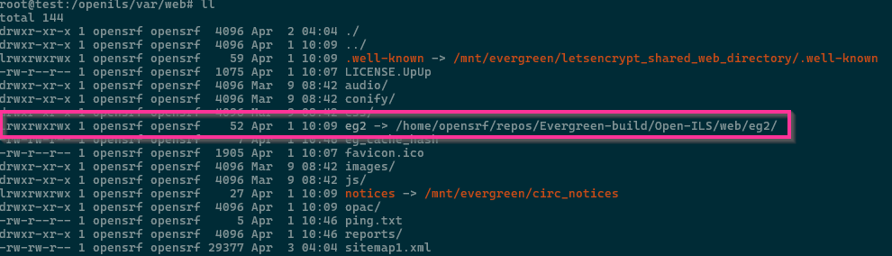
cd /openils/var/web
rm eg2
Create new link
ln -s /home/opensrf/repos/Evergreen/Open-ILS/web/eg2 eg2
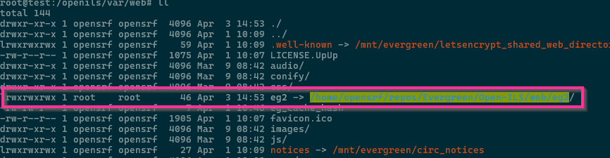
You can now run ng watch on your local computer
ng build --watch
Slides available at:
slides.mobiusconsortium.org/blake/evergreen_hack_class